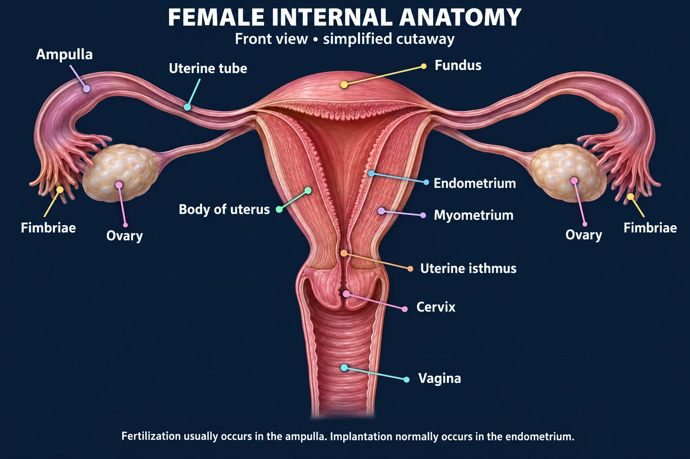
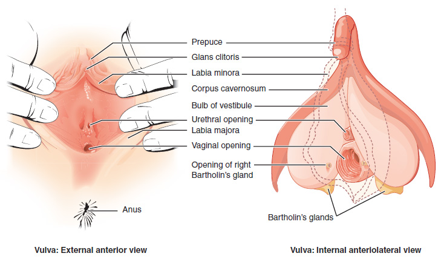
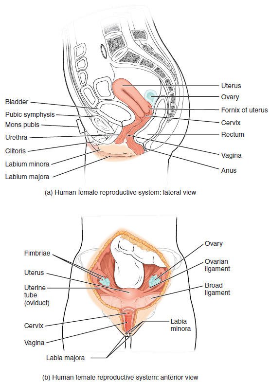
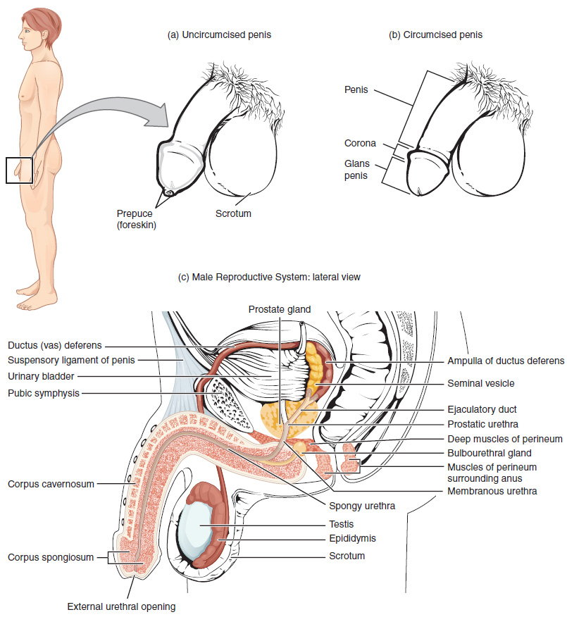
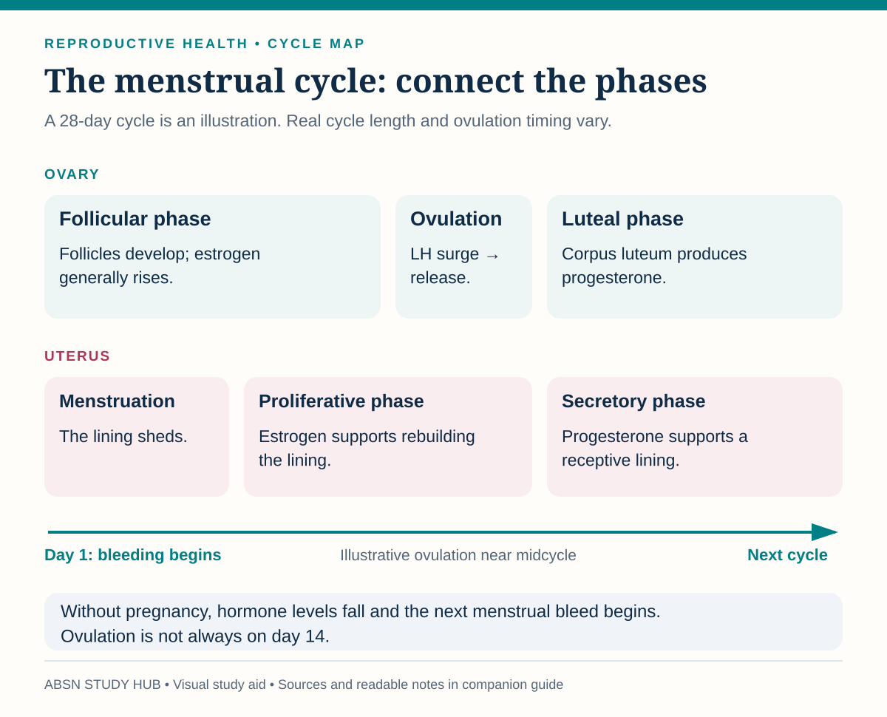

What each structure does, the two cycles running underneath, and where a pregnancy starts — the whole of Reproductive System I and II on one page.
Ovulation happens about 14 days before the next period — not 14 days after the last one. The second half of the cycle is the fixed part. In a 35-day cycle, ovulation is around day 21, not day 17.
Front view · simplified cutaway. Follow the leader lines to the named structures.

| Structure | What it does | Why it comes up |
|---|---|---|
| Ovaries | Hold the eggs; make estrogen and progesterone | The whole cycle starts here |
| Fallopian tubes | Where fertilization happens — usually the outer third | The usual site of an ectopic pregnancy |
| Fundus | The top of the uterus | What you assess after birth |
| Endometrium | The lining that thickens and sheds | Implantation, and the period |
| Myometrium | The muscle layer | Contractions and clamping down after birth |
| Cervix | The neck of the uterus | Dilates and effaces in labor |
| Vagina | The birth canal | Acidic, which protects against infection |
Two labeled views: external structures on the left; clitoral and vestibular structures on the right.

Five structures, outside in. Exams ask them as a list, so learn them as a list.
Top: side view, with the front of the body on the left. Bottom: front view of the reproductive organs.

A hollow pear sitting between the bladder in front and the rectum behind. Top to bottom:
| Part | Where | Why it matters |
|---|---|---|
| Fundus | The dome at the top | What you palpate and massage after birth |
| Corpus | The body — the bulk of it | Where the pregnancy grows |
| Uterine isthmus | The narrow waist above the cervix | Becomes the lower uterine segment — the low transverse C-section site |
| Cervix | The neck, opening into the vagina | Dilates and effaces in labor |
Where the cervix dips down into the vagina it forms arch-shaped pockets around itself — the fornices.
Muscular corridors running from the top of the uterus out toward each ovary. Outer end first:
Top: external views. Bottom: a side view that locates the glands, ducts and testis.

| Structure | What it does | Why it comes up |
|---|---|---|
| Testes | Make sperm and testosterone | Sit outside the body because sperm need to be cooler |
| Epididymis | Where sperm mature and are stored | Epididymitis — painful, and relieved by elevation |
| Vas deferens | Carries sperm up to the urethra | The tube cut in a vasectomy |
| Prostate | Adds fluid to semen | Enlarges with age — a urinary problem |
| Seminal vesicles | Add most of the fluid and the sugar sperm run on | — |
| Urethra | Carries both urine and semen | Hypospadias — the opening is not at the tip |
Sperm take roughly two to three months to make, which is why anything that damages production shows up months later, and why improvements take months too.
External: the penis, which serves both reproduction and urinary elimination, and the scrotum, the sac that houses the testes.
The scrotum has two jobs: protect the testes from trauma and regulate their temperature — sperm need to sit cooler than core body temperature.
Internal: the testes, which make male sex hormone and sperm; the ductal system, beginning with the vas deferens; and the accessory glands.
The seminal vesicles are a pair that empty an alkaline, fructose-rich fluid into the ejaculatory ducts. The prostate is a muscular gland wrapped around the first part of the urethra as it leaves the bladder, and adds alkaline fluid too.
That fluid does three things — a favorite exam list:

Sources checked October 3, 2026:
| Hormone | From | What it does |
|---|---|---|
| FSH | Pituitary | Grows the follicle |
| LH | Pituitary | The surge triggers ovulation |
| Estrogen | The growing follicle | Thickens the lining; thins the cervical mucus |
| Progesterone | The corpus luteum | Holds the lining ready; raises basal temperature |
Signs of ovulation she can notice: clear, stretchy cervical mucus like raw egg white, a small rise in basal temperature after it has happened, and sometimes one-sided pain mid-cycle.
“The menstrual cycle” is really two cycles happening together — one in the ovary, one in the lining of the uterus. The ovary answers to the pituitary; the lining answers to the ovary.
Two phases, each named for the hormone that runs it:
| Phase | Days | In charge |
|---|---|---|
| Follicular | 1–14 | FSH — follicle-stimulating hormone |
| Luteal | 15–28 | LH — luteinizing hormone |
What the endometrium does in response to estrogen and progesterone. Four phases, and the order is usually the answer:
| Cell | What it is |
|---|---|
| Somatic cells | Every ordinary body cell — what the organs and tissues are made of |
| Gametes | The sex cells, found only in the reproductive glands — egg and sperm |
The nucleus holds 23 pairs of chromosomes — 46 in all.
Each parent contributes one member of every pair — 23 chromosomes each, which is why the two together make 46.
The tier is decided by who noticed it and how sure it makes you — not by how convincing it sounds.
| Tier | Kind of data | Example |
|---|---|---|
| Presumptive | Subjective — what she reports | “My breasts hurt” |
| Probable | Objective — what you can observe | Cervical changes |
| Positive | Diagnostic — the fetus itself | Fetal heartbeat, ultrasound |
| Stage | Gestation |
|---|---|
| Pre-embryonic | 3–4 weeks |
| Embryonic | 5–10 weeks |
| Fetal | 11–40 weeks |
These are the weeks on your NUR 234 handout, so these are the ones to answer with. Some textbooks count from conception rather than from the last menstrual period and print roughly two weeks earlier for each stage. For a question from your course, use the numbers above.